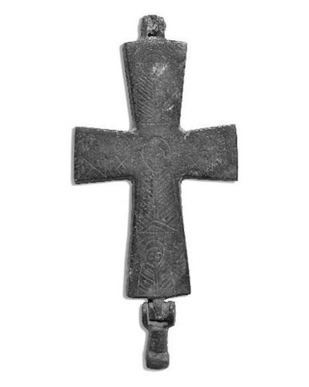
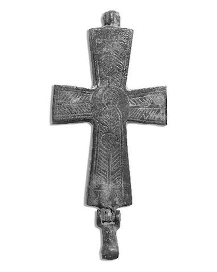

Catalog › CE-0305 · BAL2023-3
Encolpion bivalv de bronz, cat. 3, Muzeul Kuva-yi Milliye Balıkesir
sec. XI (1001–1100) · loc necunoscut · Muzeul Kuva-yi Milliye din Balıkesir (Balıkesir Kuva-yi Milliye Müzesi), Turcia, inv. Müze En. No 2001/380
double-sided reliquary cross (enkolpion), bronz; c. XI (1001–1100); find spot unknown; kept at Muzeul Kuva-yi Milliye din Balıkesir (Balıkesir Kuva-yi Milliye Müzesi), Turcia.




Identificare
- Categorie
- Encolpion bivalv (relicvar)
- Material
- Bronz
- Tehnică
- Gravare (incizie)
- Stare
- Corodată
- Dimensiuni
- Î 91 × L 42 × Gr 7 mm
Iconografie
- Avers
- Neidentificat
- Descriere avers
- În centru, până la brâu, din față, un personaj masculin a cărui identitate nu e stabilită (Hristos, cu semn de întrebare la autor); capul și nimbul foarte șterse, himationul marcat cu linii orizontale. În jurul lui, pe brațul de sus și pe cel de jos câte un sfânt (cu semn de întrebare), în înălțimea trunchiului, iar pe brațele laterale câte doi sfinți în bust, din față, cu veșmintele marcate în formă de „X”.
- Revers
- Neidentificat; Ornament geometric
- Descriere revers
- Pe brațul de sus o linie verticală cu linii oblice spre exterior, încheiată cu un motiv circular; pe brațele laterale linii oblice asemănătoare unui os de pește; la încrucișarea brațelor, pe axa centrală, o figură întreagă într-un medalion, în picioare, cu picioarele spre stânga; decorul veșmântului seamănă cu cel de pe brațul de sus.
Datare și atribuire
- Datare
- sec. XI (1001–1100)
- Centru
- Necunoscut
- Tipologie
- Pitarakis 2006, forma tip I
Descoperire
- Context
- Colecție (fără context)
- Coordonate
- 39.6484° N, 27.8826° E
- Precizia locului
- Loc de păstrare (loc de descoperire incert)
Păstrare și referințe
- Colecție
- Muzeul Kuva-yi Milliye din Balıkesir (Balıkesir Kuva-yi Milliye Müzesi), Turcia
- Nr. inventar
- Müze En. No 2001/380
- Bibliografie
- F. İ. Sıddıki, Balıkesir Kuva-yi Milliye Müzesi Koleksiyonundaki Bizans Dönemi Bronz Röliker Haçlar, „Art-Sanat”, 20, 2023, p. 561–588 [Sıddıki 2023], p. 574, cat. nr. 3, reprodusă la G. 5–6 (p. 574). DOI: 10.26650/artsanat.2023.20.1290116. Acces liber (CC BY-NC 4.0).
- Figura
- G. 5 (fotografie), G. 6 (desen)
- Planșe
- Sıddıki 2023, p. 574
- Analogii
- Efes, Muzeul Efes 223/42/80 (Pitarakis 2006, p. 369, cat. 577; Pülz 2020, p. 100, cat. 54, pl. 41, fig. 54; sec. XI)
- Observații
- Datare după Sıddıki: sec. XI. Intrată în muzeu prin achiziție, 22.01.1997; locul descoperirii nu se cunoaște (piesele au fost cumpărate din Balıkesir și împrejurimi). Dimensiuni date în sursă (cm): înălțime 9.1, lățime 4.2, grosime 0.7. Piesa e „sănătoasă”; suprafața e parțial distrusă de coroziune; inelul de pe brațul de sus lipsește. Autorul socotește piesele 1 și 3 foarte asemănătoare ca formă, tehnică și decor. Locul descoperirii nu e cunoscut cu precizie; punctul de pe hartă marchează locul de păstrare (Muzeul Kuva-yi Milliye din Balıkesir), nu locul descoperirii. Coordonate: nu sunt date în sursă.
Citare: Corpus Encolpiorum, CE-0305, Encolpion bivalv de bronz, cat. 3, Muzeul Kuva-yi Milliye Balıkesir, https://vitaliejosanu1979-ux.github.io/primul-meu-proiect/piese/BAL2023-3/ (accesat 2026-10-17).